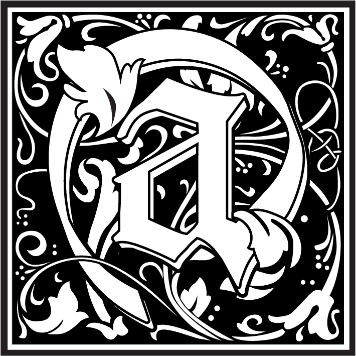

<!DOCTYPE html>
<html>
<head>
<base href="https://hashtagblessed.github.io/">
<link href="css/style.css" rel="stylesheet" type="text/css" />
  <title></title>
</head>
<body>

</body>

<style>
/* 
* Example style!
* You can do whatever the hell you want on your site :-)
*/

@font-face {
font-family: "Fraktur";
src: url("fonts/GotenborgFraktur.otf")format("opentype");
}
</style>

<body>
<link rel="stylesheet" href="css/styles.css">
<div style="position: absolute; left: 580px; top: 500px; z-index: 100; display;inline-block; max-width:1400px;">
</img><p>Hello world</p>
</div>
</img>
<div id="example4"></div>
<!-- moment.js only needed for Query 6 example -->
    <script type="text/javascript" src="//cdnjs.cloudflare.com/ajax/libs/moment.js/2.8.3/moment.min.js"></script>

    <script type="text/javascript" src="js/twitterFetcher_min.js"></script>
    <script type="text/javascript" src="js/exampleUsage.js"></script>
</body>
</html>
